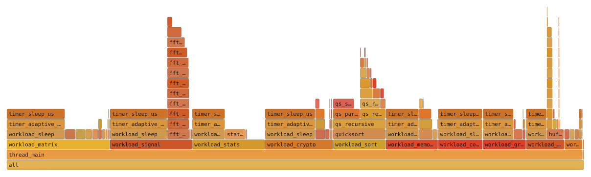

The report
$ callsight analyze traces/ --exe bin/matrixlab.instr --top 5
events=850059 threads=24 functions=84 span=6.6ms unmatched_exits=0 unclosed_enters=127
== TOP BY SELF TIME ==
calls incl_ms self_ms p50 p99 max function (first location)
12 13.170 13.170 983.04us 1.97ms 1.97ms timer_sleep_us (src/utils/timer.c:38)
16111 11.098 6.518 71ns 3.84us 1.59ms qs_partition (src/sort/quicksort.c:23)
358383 4.738 4.738 8ns 14ns 352.74us qs_swap (src/sort/quicksort.c:5)
4 2.335 2.230 180.22us 1.70ms 1.79ms matrix_multiply_blocked (src/matrix/matrix_multiply.c:24)
384 1.450 1.450 4.61us 5.63us 7.75us matrix_lu_solve (src/matrix/matrix_decomp.c:48)
== TOP BY INCLUSIVE TIME ==
…
== PER-THREAD SUMMARY ==
tid events span_msTrace files are streamed rather than loaded, so a multi-million-event run costs a few MB of analyzer memory instead of scaling with the event count.
Look at the qs_swap row. Half its calls finish in 8 ns and 99% within
14 ns, yet its slowest single call took 352 µs — the thread was descheduled
mid-call. A mean would have hidden both facts; a sampling profiler would have had almost
no chance of catching that one call at all.
The columns
| Column | Meaning | Use it to find |
|---|---|---|
calls | Times the function was entered and matched with an exit. | Exclusion candidates. The biggest numbers are your event volume. |
incl_ms | Wall time from enter to exit, children included. Recursive frames each count their own span. | Which high-level operation is slow. |
self_ms | Inclusive minus the time spent inside instrumented children. | Where the work actually happens. The hot leaves. |
p50, p99 | Per-call duration percentiles, from a histogram kept per function. | What a call normally costs, and what it costs when it doesn't. |
max | The single slowest call, tracked exactly. | The worst case that actually happened. |
min and max are exact.
The summary line
| Field | Meaning |
|---|---|
events | Enter and exit records read across all trace files. |
threads | Distinct thread ids seen. |
functions | Distinct functions with at least one completed call. |
span | First to last timestamp across all threads. |
unmatched_exits | Exits with no matching enter. 0 means a clean trace. |
unclosed_enters | Frames still open at the end — normal: threads parked inside a call when the run ended, or when TRACE_MAX stopped collection mid-stack. |
mode=summary | Present only for summary traces, which carry per-function totals instead of events. |
Lines starting with !
If capture ended for any reason other than the program finishing, the runtime records that in the trace and the report says so before the tables:
events=850059 threads=24 functions=84 span=6.6ms unmatched_exits=0 unclosed_enters=127
! capture stopped: the 512 MB on-disk budget was reached (TRACE_MAX_MB); everything
after that point is missingThis matters more than any row in the table, because it changes what the table means: a report covering the first 20% of a run is not a report about the run. The capture page lists every notice.
Flame graphs
--format folded prints one collapsed stack per call path, with self time in
nanoseconds — the input format that
flamegraph.pl
and speedscope read.
$ callsight analyze traces/ --exe ./yourapp.instr --format folded > out.folded
$ head -2 out.folded
thread_main;workload_matrix;workload_sleep;timer_adaptive_sleep;timer_sleep_us 93371544
thread_main;workload_signal;workload_sleep;timer_adaptive_sleep;timer_sleep_us 91943551
$ flamegraph.pl out.folded > out.svg # or drop out.folded into speedscope.app
The bundled matrixlab workload — 1,000,000 events, 26 threads. The tall
narrow towers are the recursive fft_recursive and qs_recursive
call chains.
Because the values are self time, the folded total equals the sum of the
self_ms column — the flame graph and the table are two views of exactly the
same numbers.
A real timeline
A flame graph aggregates: it shows where time went, not when. --format chrome
emits the Chrome trace format, which
ui.perfetto.dev opens
directly — every call as its own span, on its own thread, with true nesting.
$ callsight analyze traces/ --exe ./yourapp.instr --format chrome > trace.json
# open trace.json at ui.perfetto.devUse it when the question is about ordering or concurrency — which thread blocked, what ran while it waited, whether two operations overlapped. The output is proportional to the number of calls, so narrow the capture first.
Which call site is the expensive one
A hot function usually has several callers, and they rarely cost the same.
--format callers breaks each function down by the place it was called from:
$ callsight analyze traces/ --exe ./yourapp.instr --format callers
calls incl_ms callee <- call site
10000 0.157 leaf <- mid (src/work.c:41)
500 0.255 mid <- top (src/work.c:63)The runtime records the return address of every call, which resolves to the exact line that made it. The caller's name comes from the shadow stack rather than from symbolizing that address: when GCC inlines a function the hooks travel with the inlined body, so the return address lands in whichever function absorbed the code. The stack knows who logically called whom.
Catching regressions
Two JSON reports can be compared function by function. Because the call counts are exact rather than sampled, the comparison is real enough to gate a build on:
$ callsight diff base.json new.json --threshold 0.5
base_self_ms new_self_ms delta change function
0.077 1.181 +1.104 +1431.8% deep_compute_2
1.286 0.699 -0.587 -45.6% matrix_fill_random
$ callsight diff base.json new.json --fail-over 10 # exit 1 on a >10% regressionCompare like with like: a fixed workload, the same capture limits, and ideally
--mode summary so neither run is cut short by a budget.
Correcting for the measurement
The runtime measures its own per-hook cost at startup and records it in the trace.
--subtract-overhead deducts it — the function's own boundary, plus two hooks
for every instrumented call nested inside the window:
$ callsight analyze traces/ --exe ./yourapp.instr --subtract-overheadIt is off by default, because the default report should be what was measured rather than what was inferred. It matters most for functions with very short bodies and many instrumented children, which is exactly where raw instrumentation numbers mislead.
JSON for your own tooling
$ callsight analyze traces/ --exe ./yourapp.instr --format json --top 0 > report.jsonThe whole report: summary counters, one row per function
(function, location, calls, incl_ms,
self_ms, max_ms), and a per_thread array. Rows come
sorted by self time; --top 0 keeps every one of them.
{
"events": 1000000,
"threads": 26,
"functions": 139,
"span_ms": 48.697,
"unmatched_exits": 0,
"unclosed_enters": 136,
"rows": [
{ "function": "timer_sleep_us", "location": "src/utils/timer.c:38",
"calls": 272, "incl_ms": 529.382, "self_ms": 529.382, "max_ms": 9.983 }
],
"per_thread": [ { "tid": 60475, "events": 39104, "span_ms": 44.9 } ],
"tool": "callsight", "version": "0.3.0"
}Two obvious uses: diffing two runs to see whether a fix helped, and asserting in CI that a function's call count or self time hasn't regressed.
The tightening loop
- Run wide. No
includelines — instrument everything, with aTRACE_MAXso the run stays bounded. - Sort by
calls. The top rows are usually tiny leaf helpers: accessors, swaps, hashes, RNG. - Exclude them in
trace.configand rebuild. Volume typically drops 10–100× and the structure gets clearer, not worse. - Now read
self_ms. With the noise gone, the real hot leaves are visible. - Zoom in.
include-func <entry point>to trace one task's subtree and nothing else.
When a trace looks wrong
Every function is ??
Almost always --exe pointing at a different binary from the one that
produced the trace — a rebuild between the run and the analysis is enough.
analyze warns when most addresses fail to resolve.
Two other causes. If the trace is version 1 (written before the load
bias was recorded) and the binary is a PIE, relink with -no-pie or re-record
with a current runtime. If the binary was cross-compiled, the host
addr2line cannot read it — point at the matching toolchain:
$ callsight analyze traces/ --exe ./app.instr --addr2line arm-none-eabi-addr2lineA function I expected is missing
- It was inlined — no call boundary means no hook. Check with
nm, or build that file at a lower optimization level. - It is excluded — run
callsight scan . --config trace.configto see the selection. - It is only reached through a function pointer and you used
include-func: static call-graph resolution can't follow those. - It never returned during the trace — only completed calls appear in the table.
unmatched_exits is not zero
Some exits had no matching enter. Normal causes: TRACE_THREADS activating a
thread mid-call (events before the match are absent by design), a
TRACE_MAX cap hit mid-stack, or a truncated tail from a killed process. A
large count with none of those in play is worth reporting.
addr2line not found
Install binutils (apt install binutils), or put the matching
cross-toolchain addr2line on PATH when analyzing a trace from
another architecture.
No trace files
The run needs TRACE_ENABLE=1 — without it the hooks are inert by design.
Check TRACE_DIR, and remember that the process must exit cleanly (or the
threads must finish) for the last buffers to flush.